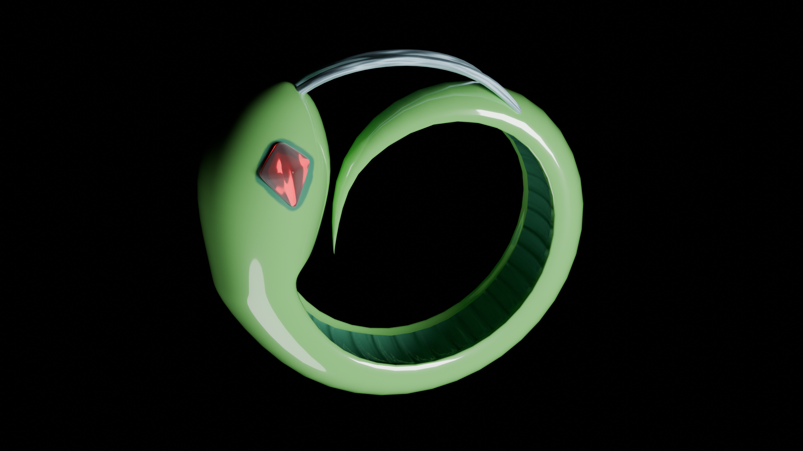

Welcome to my website! I'm Sasha Mishkin, a recent alum (Math '25) from Carnegie Mellon who loves computer graphics. :) This site contains details about my past and current projects.
Email me at: sasha (at) alerweb (dot) com
Find me on LinkedIn here.
What I'm up to now
As of: October 2, 2025
I am actively looking for work, research-related positions and graphics programming overall are most preferred but I'm also happy to gain software development experience in general.
Last week, I started participating remotely in a batch at the Recurse Center (a self-directed programming retreat). I'm still simultaneously looking for work and open to interviewing. What I've been doing so far at RC is learning about Vulkan (with the intent to make a series of small demos in it), making more shaders and creative code experiments, and getting myself more familiar with Unity.
Research Projects
I’m involved in an ongoing research project at CMU under the supervision of Prof. Ioannis Gkioulekas. The topic of the project is surface reconstruction from point clouds. I’d love to share more details but those will have to wait until the project is finished. We currently have fleshed out our core new technical ideas and are working on creating visualizations that showcase how our new algorithm can be useful.
Other Coding Projects
I’m passionate about all sorts of coding but especially enjoy creative coding (for example, creating games and shaders) and implementing graphics research.
Walk on Spheres for Poisson Surface Reconstruction
This was my final project for CMU’s Physics-Based Rendering course. Normally, students implement an advanced rendering technique for this project, but instead I implemented a Monte Carlo solver for Poisson Surface Reconstruction that ended up introducing me to key ideas in my (above) research project. I will try to share the project’s code later, if I can manage to separate its code from the educational renderer (DIRT) in which I built the solver.
I made a writeup on the project. Credits not mentioned in the writeup include Ioannis Gkioulekas for supervising the project as the course instructor and Alan Lee (teaching assistant at the time) for debugging help.
I have some future plans for this project - I would like to use raymarching and possibly also Harnack tracing) to render reconstructed surfaces.
Game Programming
I have wanted to gain practice with coding games and similar interactive applications for a very long time. This is because games are fun, involve a lot of graphics programming, and also are a good exercise designing and building complex programs that allow for a wide range of states. This fall (2024), I took a CMU course on game programming, 15-466, which was a fantastic opportunity to gain these technical skills. We wrote our games for the course using C++ and OpenGL with some starter code but no game engine.
Small Games
The small game assignments were each built in about a week’s time. I currently consider two of these games to be in a complete enough state to share here.
Final Game
The final game project for the course was built on a team of four students throughout about 7 weeks.
My team’s project is available to download and play here!
In this story-based puzzle game, you play as the shopkeeper of an intergalactic rest stop and try to serve quirky alien customers… but they all speak in ciphers. Your job is to use context clues and pattern recognition to decode what your customers are asking for.
My main contributions to the game include: modeling most of the objects in the scene (with the exception of the “Bleebus” and “CS Major” characters; my teammate Rafael did a great job on them), shading the scene to make it fit a specific color scheme, animating the customers’ entrances and exits and coordinating those animations with other game events, and creating the background music.
Shaders
Shaders are another form of creative coding that I highly enjoy but I am still just beginning to learn the craft. For now, I’ve made a few shaders on Shadertoy and I’m also working on a C++ application that displays shaders in pride colors.
Non-Technical stuff
Here are some of my interests besides math & graphics programming.
3D Art
I enjoy making 3D models in Blender in my free time. Here are a few of my favorite renders.

Linguistics
I’m minoring in linguistics, which is quite unrelated to computer graphics but that is one reason why I took on this minor - it’s been nice to explore a different field sometimes, to gain new perspectives and skills. Studying linguistics has also helped me learn how to think scientifically about language and communication. The field of pragmatics has been particularly helpful in being able to analytically understand many non-literal uses of language and how the intent of an utterance can be conveyed indirectly. I highly recommend doing a bit of exploration on pragmatics, speech act theory, and related ideas as one way to deepen how we think about interpersonal interaction.
I have also created a conlang for a completely made-up world (I made the world for the conlang, not the other way around). Here is its reference grammar.
Fonts used are Capriola (headings) and Recursive Sans Linear (body).